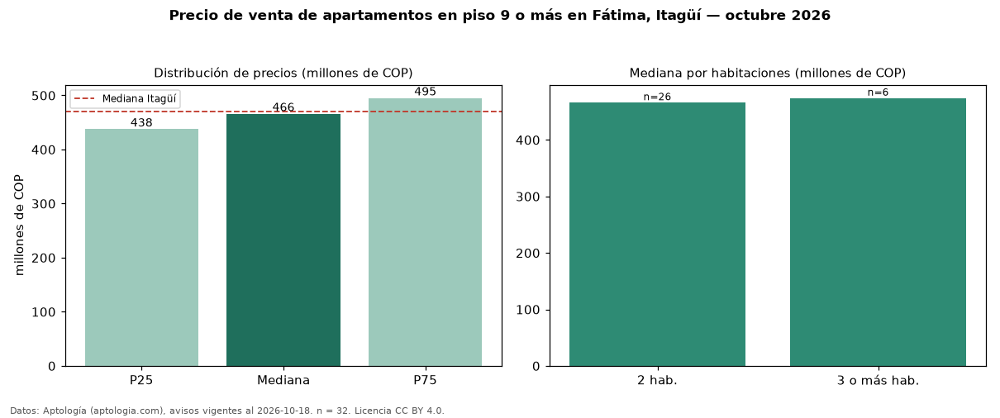

Precio de venta de apartamentos en piso 9 o más en Fátima, Itagüí — octubre 2026
COP 466 millones es el precio mediano de apartamentos en piso 9 o más en venta en Fátima, Itagüí (n = 32 avisos). Prácticamente coincide con la mediana de todos los apartamentos en venta de Fátima (COP 468 millones, n = 84); este segmento reúne el 38 % de esos avisos. Por metro cuadrado, la mediana es COP 7,40 millones/m² (n = 32), 2 % por encima del conjunto de referencia (COP 7,23 millones/m²). El área mediana anunciada es 62 m². El segmento con más oferta es el de 2 habitaciones (26 avisos, mediana COP 466 millones); pasar de 2 habitaciones a 3 o más habitaciones cambia la mediana +2 %. La administración mediana declarada es COP 304.456 al mes (n = 22). El estrato más frecuente es 3 (61 % de los avisos con estrato). La mediana de todos los apartamentos en venta de Itagüí es COP 470 millones (−1 % de diferencia). Datos: Aptología (aptologia.com), CC BY 4.0 — https://www.aptologia.com/venta/itagui/fatima. Archivos: PDF, CSV con las cifras y gráfica PNG.

| Avisos únicos | 32 |
|---|---|
| Percentil 25 | COP 437.500.000 |
| Mediana | COP 466.000.000 |
| Percentil 75 | COP 495.000.000 |
| Mediana por m² | COP 7.396.825 |
Fuente: avisos vigentes de portales inmobiliarios recopilados por Aptología, deduplicados (mínimo 30 avisos únicos por celda). Precios pedidos, no cerrados. Fecha: 2026-10-18.